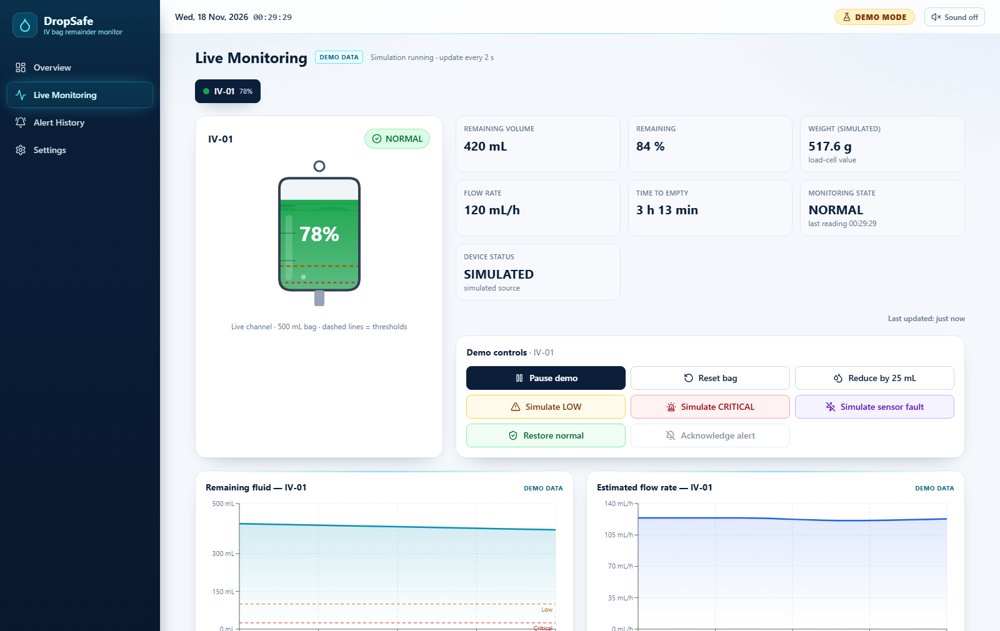

| Tier | Component | Responsibility |
|---|---|---|
| Sensing | 5 kg load cell + HX711 | Convert mechanical load into a 24-bit digital count and a stable gross weight. |
| Edge | ESP32 DevKit | Sample at 1 Hz, convert weight to volume/status, drive buzzer and LED, queue and publish. |
| Transport | HTTPS POST | JSON plus device token over verified TLS; retry with backoff; never block sampling. |
| Gateway | Vercel Node function | Authenticate, rate-limit, validate, recompute volume/status, write atomically. |
| Storage | Firebase RTDB | Current snapshot, history, heartbeat and published configuration. |
| Presentation | React dashboard | Read-only subscription, charts, alert lifecycle, CSV export and settings. |
Why a gateway? The Firebase service account stays server-side, only a SHA-256 digest of the device token exists in the cloud, and the server recomputes volume and status instead of trusting the device. One place to change thresholds or the fluid model without reflashing hardware.
| Component | Qty | Role / notes |
|---|---|---|
| ESP32 DevKit | 1 | Dual-core 3.3 V controller; Wi-Fi, TLS client, FreeRTOS task, alarm driver. |
| HX711 module | 1 | 24-bit sigma-delta ADC and amplifier for the bridge; about 10 samples/s. |
| Load cell, 5 kg | 1 | Strain-gauge bridge; rated far above the ~0.6 kg working load. |
| Passive buzzer | 1 | Audible alarm via tone() on GPIO 4. |
| Status LED | 1 | Visual alarm on GPIO 2 (often the onboard LED). |
| Rigid frame / hanger | 1 | Keeps the bag hanging freely; avoid side loads and bench contact. |
| 5 V supply | 1 | Powers ESP32 and HX711; shared ground is mandatory. |
| Constant | Value | Purpose |
|---|---|---|
SAMPLE_INTERVAL_MS | 1000 | Local weight sample and status refresh at 1 Hz. |
PUBLISH_INTERVAL_MS | 5000 | One queued cloud sample every 5 s; ~2 min of buffering. |
OFFLINE_QUEUE_SIZE | 24 | Survives short outages; overflow drops the oldest sample. |
HTTP_TIMEOUT_MS | 8000 | Connect and read timeout per POST; sampling continues. |
WIFI_RETRY_MS / NTP_RETRY_MS | 10000 / 60000 | Explicit Wi-Fi re-begin and time-sync retry intervals. |
FLUSH_INTERVAL_MS | 1000 | One queued sample per second while draining after reconnect. |
| Status | Buzzer / tone | LED |
|---|---|---|
| NORMAL | Silent | Off |
| LOW | 150 ms every 2 s · 1800 Hz | Follows buzzer |
| CRITICAL | 250 ms every 500 ms · 2500 Hz | Follows buzzer |
| SENSOR_FAULT | 100 ms every 1 s · 1800 Hz | Follows buzzer |
WiFiClientSecure with the root CA pinned via setCACert(); TLS_INSECURE 0, so certificate verification is never disabled.
Every request carries X-Device-Token; the gateway stores only its SHA-256 digest. NTP time is used for sample timestamps; the server stamps receivedAt.
The model assumes 0.9% saline at 1.005 g/mL and a 500 mL nominal bag. EMPTY_BAG_TARE_G is a fitted zero offset, not the physical plastic mass; factor and tare are only valid as a pair.
| Condition | Status | Local output |
|---|---|---|
| volume > 100 mL | NORMAL | Silent |
| 25 < volume ≤ 100 mL | LOW | Slow beep |
| volume ≤ 25 mL | CRITICAL | Fast high beep |
| invalid / not ready | SENSOR FAULT | Low periodic buzz |
| State | Display | Reference | Error |
|---|---|---|---|
| Empty hanging assembly | 0 mL | 0 mL | 0 |
| Mid-bag fill | ~248 mL | 250 mL | −0.8% |
| Full 500 mL bag | ~492 mL | 500 mL | −1.6% |
Fit the empty and full endpoints together: new factor = (raw_full − raw_empty) ÷ (known_full_mL × density); tare = raw_empty ÷ factor. Values in use: factor 187.9, tare 95.6 g. The same pair is duplicated in firmware config.h, dashboard calculations.ts, gateway .env and the docs — change all four together.
Flow uses the newest six valid points. It skips fault samples and stops at a discontinuity (manual level change, reset, source switch). Negative rates and anything above 2000 mL/h are rejected; TTE is volume ÷ flow and shows “Unavailable” when flow is not trusted.
| Field | Rule applied by the gateway | Result |
|---|---|---|
deviceId / bagId | Must exactly match the configured device and bag. | 400 if unknown |
weightG | Finite, 0–5000 g, or null. A null weight forces a fault. | 400 if out of range; else SENSOR_FAULT |
volumeMl, percent, status | Ignored. Recomputed from weight and server thresholds. | Server-authoritative values stored |
recordedAt | Finite; clamped to now − 24 h … now + 5 min. | Server time if invalid |
rssi, uptimeSec, publishIntervalSec | Optional; range-checked; defaults applied. | null / default if invalid |
Trust boundary in one sentence: the device may report a weight, but it cannot report a healthy status; volume, percent and status always come from the server.
monitoring/ ├─ config/ schemaVersion, bagId, deviceId, thresholds, fluid model, tare, historyLimit ├─ bags/IV-01/ bagId, deviceId, weightG, volumeMl, percent, status, sensorOk, alarm, recordedAt, receivedAt ├─ history/IV-01/ <recordedAt>/ → t, w, volumeMl, percent, status, sensorOk, receivedAt (retries idempotent) └─ device/dropsafe-01/ id, bagId, online, lastSeen, lastRecordedAt, firmware, rssi, uptimeSec, alarm, sensorOk
One atomic update: history, current bag and heartbeat are written in a single multi-path update(), so a reader never sees a half-written sample. The current snapshot only moves forward by recordedAt; history is pruned to 500 points every 20 accepted writes.
Access: root read/write is false; only monitoring/ is publicly readable and never writable. Browsers need no login, and no Admin credential or raw device token is present in front-end code or VITE_* variables.
{
"rules": {
".read": false, ".write": false,
"monitoring": { ".read": true, ".write": false }
}
}

| Source | How it works | When used |
|---|---|---|
| SIMULATED | Internal demo bag, configurable drain at 120× real time. | Default demo; fallback if hardware fails. |
| FIREBASE | Read-only onValue on bag, device and connection nodes. | Production: hardware publishing to the cloud. |
| HARDWARE | Web Serial at 115200 baud, parsing JSON lines with bagId and weightG. | Bench debugging over USB in Chrome/Edge. |
All three produce the same SensorReading; the reducer, thresholds, alerts and charts are identical. The deployed firmware's primary path is HTTPS, not Web Serial.
X-Device-Token, POSTs over TLS.onValue.| Time | Device | Dashboard |
|---|---|---|
| t = 0 | Wi-Fi drops. Sampling and the local alarm continue unchanged. | Last values remain; link becomes OFFLINE when the RTDB socket drops. |
| 0–2 min | Samples fill the 24-slot ring buffer; oldest are dropped after that. | Stale/offline banner explains that the device may still be alarming locally. |
| Reconnect | Network task drains one sample per second, oldest first. | History updates; current snapshot only moves forward because older samples are ignored. |
| Normal | Returns to a 5 s publish cadence; queue empties. | Link returns to ONLINE after the next heartbeat/timestamp. |
Refill/restore closes the alert condition but keeps history. Calibration: unload → tare → known mass → cal <grams> → fit both endpoints → verify mid-scale → update all four copies.
| Threat | Mitigation in DropSafe | Residual risk |
|---|---|---|
| Device impersonation | 32-byte token in X-Device-Token; only its SHA-256 digest is stored; constant-time comparison. | One shared token; theft of the device exposes it. |
| Forged “healthy” reading | Server ignores device volume/status and recomputes both from weight. | A forged in-range weight is indistinguishable from a real one. |
| Unauthorised writes | Rules deny all writes; only the Admin SDK (server) writes. | Admin credential compromise is out of scope. |
| Secret leakage | .env, service account and secrets.h are git-ignored; only VITE_* reaches the browser. | Public repository requires discipline; history is not rewritten. |
| Man-in-the-middle | HTTPS with the GTS Root R1 pinned; TLS_INSECURE 0; gateway rejects non-HTTPS. | Device clock/CA mistakes cause failure, not silent downgrade. |
| Replay / duplicates | History key is the timestamp; current state only moves forward; atomic update. | A replayed newer timestamp could still overwrite. |
| Alert suppression | Acknowledgement never changes status; the server owns status. | An operator can silence the sound at the device. |
Buzzer and LED run in the main loop, not a cloud callback. Losing Wi-Fi does not silence the bedside alarm.
24 slots absorb about two minutes at 5 s; overflow drops the oldest sample, preserving current state.
History, current and heartbeat commit together; timestamp-keyed history makes retries idempotent.
ONLINE/STALE/OFFLINE is derived from server timestamps, not a persisted flag.
| Limitation | Impact | What production needs |
|---|---|---|
| Public read-only monitoring data | Anyone with the URL can read bag levels. | Staff authentication, role-based access, per-tenant rules. |
| One shared device token | Revoking one device affects all devices with that token. | Per-device credentials and a rotation/revocation service. |
| No user accounts or audit log | No record of who viewed or acknowledged an alert. | Identity, audit trail and alert escalation. |
| Weight model assumes 1.005 g/mL | Other fluids or bag shapes need a new fit. | Fluid-specific configuration or a second sensing method. |
| Mechanical sensitivity | Bench contact or side load biases the reading. | Enclosure, strain relief, calibrated hanger, temperature compensation. |
| Not a medical device | No clinical validation, alarm certification or regulatory approval. | Design controls, IEC 60601/62304-style process, clinical trials. |
| System check | Result | Evidence |
|---|---|---|
| Production health | PASS 200 | {"ok":true,"service":"dropsafe-gateway"} |
| Production dashboard | PASS 200 | Vite bundle served from dropsafe-xi.vercel.app. |
| Telemetry without / bad token | PASS 401 | Same response; no body processing. |
| Automated suite | PASS 139/139 | Vitest, 11 files, 18 Nov 2026. |
Also verified: function region sin1 (X-Vercel-Id: …::sin1::…) and calibration endpoints — empty → 0 mL, mid → ~248 mL, full → ~492 mL.
dist/ served from the Vercel edge; React and assets./api/health and /api/telemetry as Node 22 functions.| Command | What it does |
|---|---|
npm install | Install frontend, gateway and test dependencies. |
npm run dev | Vite development server for the dashboard. |
npm test | Run the 139-test Vitest suite. |
npm run build | Type-check and build the production bundle. |
npm run device-token | Generate a device token and its SHA-256 digest. |
npm run server | Local Express gateway on port 8787 (production uses Vercel). |
Environment: public VITE_FIREBASE_DATABASE_URL, VITE_FIREBASE_BAG_ID, VITE_FIREBASE_DEVICE_ID, VITE_FIREBASE_AUTO_CONNECT, VITE_FIREBASE_STALE_AFTER_SEC. Server-only: Firebase service account, DEVICE_TOKEN_SHA256, REQUIRE_HTTPS=true, thresholds and tare.
| Time | On screen | Say / show |
|---|---|---|
| 0:00–1:00 | Title / live dashboard | Hook: an IV bag has no sensor; staff check it by eye. DropSafe makes the bag report itself. |
| 1:00–2:30 | Architecture | Trace one reading: load cell → ESP32 → HTTPS → Firebase → dashboard. Point out the local alarm branch. |
| 2:30–4:00 | Hardware / wiring | Explain the bridge, HX711, and why weight is independent of bag shape. Mention free hanging. |
| 4:00–5:30 | Calibration slide | Two-point fit, factor 187.9 and tare 95.6, 0 / ~248 / ~492 mL. Tell the calibration bug story. |
| 5:30–7:30 | Live Monitoring | Demo volume and flow; trigger LOW then CRITICAL; acknowledge; show history. |
| 7:30–8:30 | Security / reliability | Server-authoritative writes, read-only browser, token digest, TLS pin, queue and stale detection. |
| 8:30–10:00 | Results, limits & close | 139 tests, deployment checks, calibration error. State clinical/security limits, then close on the trust boundary and next steps. |
API_URL, CA and token./api/health returns ok.